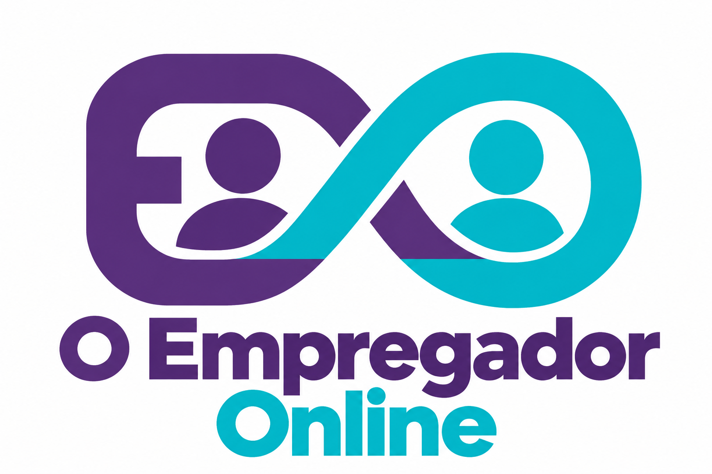

Início
Oportunidades
Planos
Entrar / cadastrar
Meu espaço ↗
PROTÓTIPO EM TESTE · Use dados fictícios · Alterações salvas apenas neste navegador
Instalar aplicativo ↓
Visualizar no celular
⌂
Início
⌕
Explorar
◇
Planos
◎
Meu espaço
×